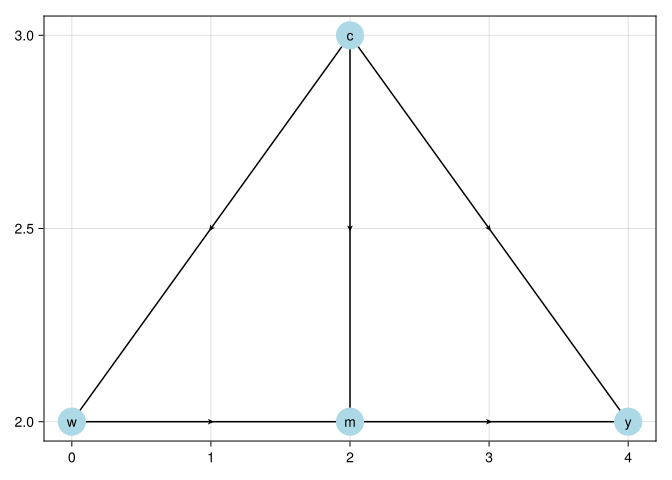

using CairoMakie
using GraphMakie
using Graphs
using GLM
using DataFrames
using StatsModels
using DataFramesMeta
using Random
using Distributions
using StatsFuns
using Statistics
using Lavaan
using Crumble
using Printf21 Causal Mediation Analysis

21.1 Classical Mediation
Traditionally mediation model can be represented in the following equations:
\[ Y = a W + b M + \epsilon_1 \] \[ M = c W + \epsilon_2 \]
That is, we’d like to study the effect of \(W\) on \(Y\), and we see the effect can be a direct effect, and an indirect effect, through \(M\).
Baron and Kenny’s (http://davidakenny.net/cm/mediate.htm) method is done in four steps. Modern approach tends to use SEM (structural equation modeling) to model these two equations directly.
using Random
using DataFrames
using StatsModels
using Lavaan
Random.seed!(1234)
n = 10000
X = randn(n)
M = 0.5 .* X .+ randn(n)
Y = 0.7 .* M .+ 0.3 .* X .+ randn(n)
Data = DataFrame(X = X, M = M, Y = Y)
model = """
Y ~ a*X + b*M
M ~ c*X
# direct effect (a)
# indirect effect (b*c)
bc := b*c
# total effect
total := a + (b*c)
"""" Y ~ a*X + b*M\n M ~ c*X\n # direct effect (a)\n # indirect effect (b*c)\n bc := b*c\n # total effect\n total := a + (b*c)\n"fit = sem(model, Data)
fitlavaan 0.1.0-dev fit object
Estimator: ML
Converged: Yes
χ²(1) = 999999999999999983222784.000 [p = 0.000]
Call summary() for full output.21.1.1 Problems with Classical Mediation
- Lack of causal claim. We have to assume that there is no unmeasured confounder between \(M\) and \(Y\). This is a strong assumption.
- Assumption of homogeneous effect.
21.2 Causal Mediation
21.2.1 CDE
Suppose we can set \(W\) and \(M\) at will to any \((w, m)\), then we have the potential outcome \(Y(w,m)\).
Controlled direct effect (CDE) is defined as \[ CDE(m) = E[Y(1,m)-Y(0,m)] \] That is, setting \(M\) to \(m\), what is the effect of \(W\) on \(Y\)?
21.2.2 Assumptions
- Conditional treatment randomization. Suppose we observe confounders X, which can be a joint set of confounders for the W to Y pathway, or the M to Y pathway.
\[ Y(w,m) \perp W|X \]
This is the usual conditional independence (unconfoundedness, ignorability, etc.) assumption. This is saying the assignment of treatment, given covariates \(X\), has nothing to do with potential outcomes.
- Conditional mediator randomization.
\[ Y(w,m) \perp M|X, W=w \]
This is to say, within each strata of X, given treatment status, the assignment of mediator gives no information about potential outcome. This randomization is usually not implemented during many experiments (random trials). This is the assumption that makes a lot of mediation hard to make a causal claim.
- Positivity (overlap). There are two positivity assumptions:
\[ P(W=w | X=x) > 0 \] for all \(x\). This is the usual positivity assumption.
\[ P(M=m | X=x, W=w) > 0 \] for all \(x\), \(w\), and \(m\). This is the mediator positivity.
21.2.3 Estimation
CDE can be estimated using G-computation method, or IPW, or the doubly-robust methods, one of them is AIPW (augmented IPW).
21.2.4 G-computation
G-computation is to model the outcome equation: \[ \small \begin{eqnarray*} CDE_G(m) &=& \sum_x [ E[Y \mid W=1, M=m, X=x] - \\ && E[Y \mid W=0, M=m, X=x]] P(X=x) \end{eqnarray*} \]
21.2.5 IPW
IPW is to model the treatment assignment equation and the mediator assignment equation:
\[ \small E[Y(w,m)] = E[{\frac{I(W=w, M=m)}{P(W=w, M=m | X)}} Y] \]
Therefore,
\[ \small CDE_{ipw}(m) = E\left[\frac{I(W=1,M=m)}{g_M(m|1,X)\,g_W(1|X)}\, Y - \frac{I(W=0,M=m)}{g_M(m|0,X)\,g_W(0|X)}\, Y\right] \]
where \(g_M\) is the probability of mediator, \(g_W\) is the probability of treatment.
21.2.6 AIPW
\[ CDE_{AIPW} = CDE_G(m) + B(\bar Q, g_M, g_W) \] where \(\bar Q\) is the mean outcome function.
\[ \small \begin{eqnarray*} B(\bar Q, g_M, g_W) &=& \frac{1}{n} \sum_{i=1}^{n} {\frac{I(M_i=m, W_i=1)}{g_M(m|1, X_i) g_W(1|X_i)}[Y_i-\bar Q(m,1,X_i)]} \\ & & - \frac{1}{n} \sum_{i=1}^{n} {\frac{I(M_i=m, W_i=0)}{g_M(m|0, X_i) g_W(0|X_i)}[Y_i-\bar Q(m,0,X_i)]} \end{eqnarray*} \]
21.2.7 Example: G-computation
using GLM
using Distributions
using StatsFuns
using Statistics
Random.seed!(1234)
n = 5000
# confounder of A/Y
W1 = randn(n)
# confounder of M/Y
W2 = randn(n)
# treatment
A = rand.(Bernoulli.(logistic.(-1 .+ W1 ./ 2)))
# binary mediator
M = rand.(Bernoulli.(logistic.(-2 .+ A ./ 2 .+ W2 ./ 3)))
# binary outcome
Y = rand.(Bernoulli.(logistic.(-1 .+ A .- M ./ 2 .+ W1 ./ 3 .+ W2 ./ 3)))
full_data = DataFrame(W1 = W1, W2 = W2, A = A, M = M, Y = Y)
# fit outcome regression
or_fit = glm(@formula(Y ~ A + M + W1 + W2), full_data, Binomial(), LogitLink())
# new data setting A and M
data_A1_M0 = copy(full_data)
data_A0_M0 = copy(full_data)
data_A1_M0.A .= 1; data_A1_M0.M .= 0
data_A0_M0.A .= 0; data_A0_M0.M .= 0
# predict on new data
Qbar_A1_M0 = predict(or_fit, data_A1_M0)
Qbar_A0_M0 = predict(or_fit, data_A0_M0)
# gcomp estimate of CDE(0)
cde_gcomp = mean(Qbar_A1_M0 .- Qbar_A0_M0)
@printf "CDE(0) G-computation = %.4g\n" cde_gcompCDE(0) G-computation = 0.211321.2.8 Example: IPW
# model for P(A = 1 | W)
ps_fit1 = glm(@formula(A ~ W1 + W2), full_data, Binomial(), LogitLink())
P_A1_W = predict(ps_fit1)
P_A0_W = 1 .- P_A1_W
# model for P(M = 0 | A, W)
ps_fit2 = glm(@formula(M ~ A + W1 + W2), full_data, Binomial(), LogitLink())
# P(M = 0 | A = 1, W)
data_A1 = copy(full_data); data_A1.A .= 1
P_M0_A1_W = 1 .- predict(ps_fit2, data_A1)
# P(M = 0 | A = 0, W)
data_A0 = copy(full_data); data_A0.A .= 0
P_M0_A0_W = 1 .- predict(ps_fit2, data_A0)
# ipw estimate of CDE(0)
cde_ipw = mean( (A .== 1) ./ P_A1_W .* (M .== 0) ./ P_M0_A1_W .* Y ) -
mean( (A .== 0) ./ P_A0_W .* (M .== 0) ./ P_M0_A0_W .* Y )
@printf "CDE(0) IPW = %.4g\n" cde_ipwCDE(0) IPW = 0.22621.2.9 Example: AIPW
# aipw estimate of E[Y(1,0)]
aiptw_EY_A1_M0 = mean(Qbar_A1_M0) +
mean( (A .== 1) ./ P_A1_W .* (M .== 0) ./ P_M0_A1_W .* (Y .- Qbar_A1_M0) )
# aipw estimate of E[Y(0,0)]
aiptw_EY_A0_M0 = mean(Qbar_A0_M0) +
mean( (A .== 0) ./ P_A0_W .* (M .== 0) ./ P_M0_A0_W .* (Y .- Qbar_A0_M0) )
# aipw estimate of CDE(0)
cde_aipw = aiptw_EY_A1_M0 - aiptw_EY_A0_M0
@printf "CDE(0) AIPW = %.4g\n" cde_aipwCDE(0) AIPW = 0.224521.3 NIE and NDE: Natural Direct and Indirect Effects
CDE is to study the effect of treatment, given the level of mediator. Instead, Natural Effect is to set mediator to its natural value with the value of treatment, that is, \(M=M(w)\).
\[ \begin{eqnarray*} ATE &=& NIE + NDE \\ &=& (E[ Y(1,M(1))] - E[Y(1,M(0))]) + \\ && (E[Y(1, M(0))] - E[Y(0,M(0))]) \end{eqnarray*} \]
The advantage of NDE and NIE comparing to CDE is that it’s more “natural”; that is, you don’t set the level of mediator deterministically. And it can decompose the ATE into direct and indirect effects.
However, there is an additional assumption for NDE and NIE identified.
21.3.1 Additional Assumption
\[ Y(w, m) \perp M(w^*) | X\]
This is the “cross-world” condition: the outcome under \((w,m)\) is independent of \(M\) under \(w^*\). These two situations cannot happen in the same world; you cannot set \(W\) to both \(w\) and \(w^*\). There is no experiment can implement it.
21.3.2 Estimation
# fit outcome regression (include interaction because we can)
or_fit = glm(@formula(Y ~ A + M + W1 + W2 + A&M + M&W1), full_data, Binomial(), LogitLink())
# need E(Y | A = 0/1, M = 0/1, W1 = W1i, W2 = W2i)
function get_EY_a_m_Wi(full_data, or_fit, a, m)
data_Aa_Mm_Wi = copy(full_data)
data_Aa_Mm_Wi.A .= a
data_Aa_Mm_Wi.M .= m
predict(or_fit, data_Aa_Mm_Wi)
end
EY_A0_M0_Wi = get_EY_a_m_Wi(full_data, or_fit, 0, 0)
EY_A0_M1_Wi = get_EY_a_m_Wi(full_data, or_fit, 0, 1)
EY_A1_M0_Wi = get_EY_a_m_Wi(full_data, or_fit, 1, 0)
EY_A1_M1_Wi = get_EY_a_m_Wi(full_data, or_fit, 1, 1)
# include interactions -- why not? (NOTE: A*W1 expands to A + W1 + A&W1, so
# the MAIN effects are included. Writing only A&W1 would omit the main effect
# of A and force the estimated NIE to be essentially zero by construction.)
med_fit = glm(@formula(M ~ A*W1 + W1*W2), full_data, Binomial(), LogitLink())
# estimates of P(M = m | A = a, W = W_i)
function get_Pm_a_Wi(full_data, med_fit, a, m)
data_Aa_Wi = copy(full_data)
data_Aa_Wi.A .= a
p = predict(med_fit, data_Aa_Wi)
if m == 1
return p
else
return 1 .- p
end
end
PM0_A0_Wi = get_Pm_a_Wi(full_data, med_fit, 0, 0)
PM1_A0_Wi = get_Pm_a_Wi(full_data, med_fit, 0, 1)
PM0_A1_Wi = get_Pm_a_Wi(full_data, med_fit, 1, 0)
PM1_A1_Wi = get_Pm_a_Wi(full_data, med_fit, 1, 1)
# E(E(Y | A = 1, M, W) | A = 1, W)
EY1M1_Wi = EY_A1_M1_Wi .* PM1_A1_Wi .+ EY_A1_M0_Wi .* PM0_A1_Wi
# E(E(Y | A = 0, M, W) | A = 1, W)
EY0M1_Wi = EY_A0_M1_Wi .* PM1_A1_Wi .+ EY_A0_M0_Wi .* PM0_A1_Wi
# E(E(Y | A = 1, M, W) | A = 0, W)
EY1M0_Wi = EY_A1_M1_Wi .* PM1_A0_Wi .+ EY_A1_M0_Wi .* PM0_A0_Wi
# E(E(Y | A = 0, M, W) | A = 0, W)
EY0M0_Wi = EY_A0_M1_Wi .* PM1_A0_Wi .+ EY_A0_M0_Wi .* PM0_A0_Wi
# estimate of E[Y(1, M(1))]
E_Y1M1 = mean(EY1M1_Wi)
# estimate of E[Y(0, M(1))]
E_Y0M1 = mean(EY0M1_Wi)
# estimate of E[Y(1, M(0))]
E_Y1M0 = mean(EY1M0_Wi)
# estimate of E[Y(0, M(0))]
E_Y0M0 = mean(EY0M0_Wi)
# NDE = E[Y(1,M(0))] - E[Y(0,M(0))], NIE = E[Y(1,M(1))] - E[Y(1,M(0))]
@printf "NDE = %.4g\n" (E_Y1M0 - E_Y0M0)
@printf "NIE = %.4g\n" (E_Y1M1 - E_Y1M0)
@printf "ATE = %.4g\n" (E_Y1M1 - E_Y0M0)NDE = 0.2093
NIE = -0.01266
ATE = 0.196621.4 IIE and IDE: Interventional Direct and Indirect Effects
People are not happy with the cross-world assumption in general. Interventional effects avoid it. The device is a random draw: instead of the unit’s own \(M(w^*)\), use \(M^*_{w^*}\), a draw from the distribution of \(M(w^*)\) given \(X = x\). Effects defined through such draws are identified without the cross-world assumption, even when a treatment-induced confounder \(Z\) sits between treatment and mediator — the situation in the example below.
One subtlety matters. The plain randomized-interventional decomposition (available in Crumble.jl as effect = "RI") uses the draw in every term; its direct and indirect effects sum to an “overall interventional effect” that need not equal the ATE when \(Z\) is present, because the random draw breaks the within-unit dependence between \(M\) and \(Y\). The recanting twins construction (effect = "RT", used below) is built precisely to repair this: it decomposes the actual ATE,
\[ ATE \;=\; E[Y(1, Z(1), M(1))] - E[Y(0, Z(0), M(0))] \;=\; IIE + IDE, \]
into direct and indirect components by walking a path of intermediate “twin” regimes for \(Z\) and \(M\), each identified without cross-world independence. With effect = "RT", the printed \(IDE + IIE\) adds up to the ATE by construction.
21.4.1 Example
using DataFrames
using StatsModels
using Random
using StatsFuns
using Distributions
using Crumble
Random.seed!(1584)
# produces a simple data set based on a causal model with mediation
function make_example_data(n_obs = 1000)
# baseline covariates
w_1 = rand.(Bernoulli(0.6), n_obs)
w_2 = rand.(Bernoulli(0.3), n_obs)
w_3_prob = min.(0.2 .+ (w_1 .+ w_2) ./ 3, 1.0)
w_3 = rand.(Bernoulli.(w_3_prob))
# exposure
a_prob = logistic.(w_1 .+ w_2 .+ w_3 .- 2)
a = rand.(Bernoulli.(a_prob))
# mediator-outcome confounder affected by treatment
z_prob = logistic.(-log(2) .- a .+ (w_1 .+ w_2 .+ w_3) ./ 3 .+ 0.2)
z = rand.(Bernoulli.(z_prob))
# mediator -- could be multivariate
m_prob = logistic.(log(3) .* (w_1 .+ w_2) .+ 2 .* a .- 2 .* z)
m = rand.(Bernoulli.(m_prob))
# outcome
y_prob = logistic.(1 ./ (w_1 .+ w_2 .+ w_3 .- z .+ a .+ m))
y = rand.(Bernoulli.(y_prob))
# construct output
dat = DataFrame(W_1 = w_1, W_2 = w_2, W_3 = w_3, A = a, Z = z, M = m, Y = y)
return dat
endmake_example_data (generic function with 2 methods)# set seed and simulate example data
example_data = make_example_data()
w_names = ["W_1", "W_2", "W_3"]
m_names = ["M"]
# quick look at the data
first(example_data, 6)6×7 DataFrame
| Row | W_1 | W_2 | W_3 | A | Z | M | Y |
|---|---|---|---|---|---|---|---|
| Bool | Bool | Bool | Bool | Bool | Bool | Bool | |
| 1 | false | true | false | false | false | true | true |
| 2 | false | false | false | false | false | true | true |
| 3 | false | false | false | false | false | true | true |
| 4 | false | false | false | false | false | true | true |
| 5 | true | false | false | false | false | false | true |
| 6 | true | true | true | true | true | true | false |
# Estimate interventional direct and indirect effects using Crumble.jl
# effect = "RT" is the recanting twin estimand, which gives IDE and IIE
# while handling Z (mediator-outcome confounder affected by treatment)
result = crumble(example_data, ["A"];
outcome = "Y",
mediators = m_names,
moc = ["Z"], # post-treatment confounder Z
covar = w_names,
effect = "RT", # recanting twin
learners = ["glm"])
resultCrumbleResult
Effect type: RT
Estimates:
Direct Effect -0.0005 (SE: 0.7612) [95% CI: -1.4925, 1.4915]
Average Treatment Effect -0.0005 (SE: 0.7611) [95% CI: -1.4924, 1.4913]
Indirect Effect -0.0000 (SE: 0.7617) [95% CI: -1.4930, 1.4929]# Extract direct and indirect effect estimates
ide = result.estimates["direct"]
iie = result.estimates["indirect"]
@printf "IDE (Direct) = %.4g (SE = %.4g)\n" ide["estimate"] ide["std.error"]
@printf "IIE (Indirect) = %.4g (SE = %.4g)\n" iie["estimate"] iie["std.error"]
@printf "ATE = %.4g\n" result.estimates["ate"]["estimate"]IDE (Direct) = -0.0005093 (SE = 0.7612)
IIE (Indirect) = -2.789e-05 (SE = 0.7617)
ATE = -0.0005372